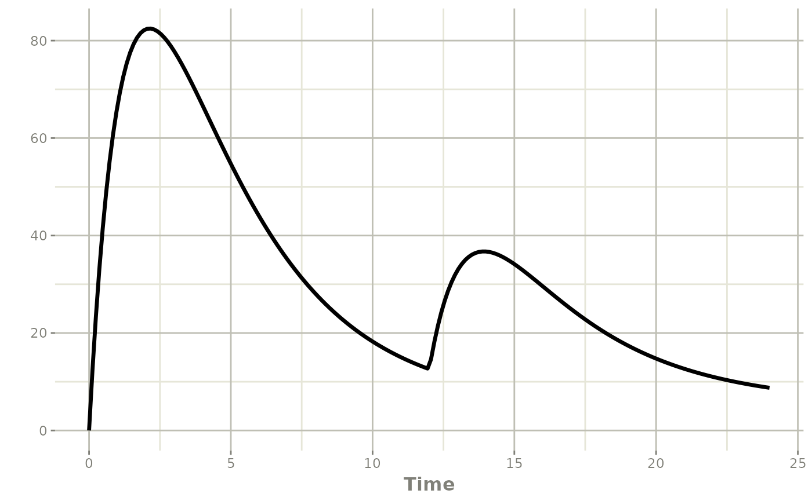
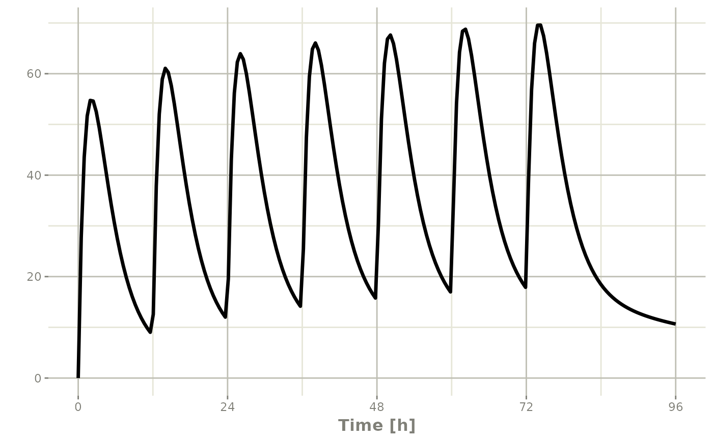
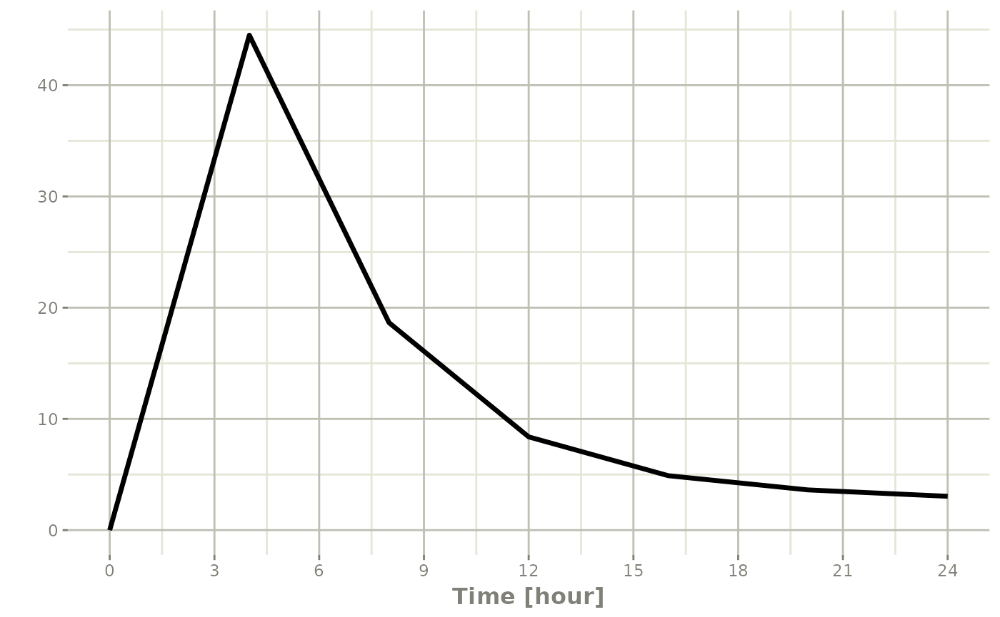
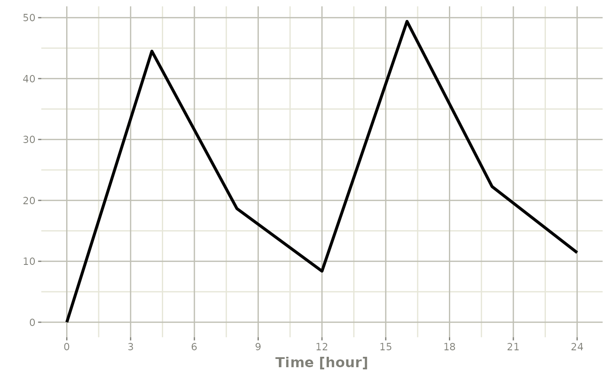
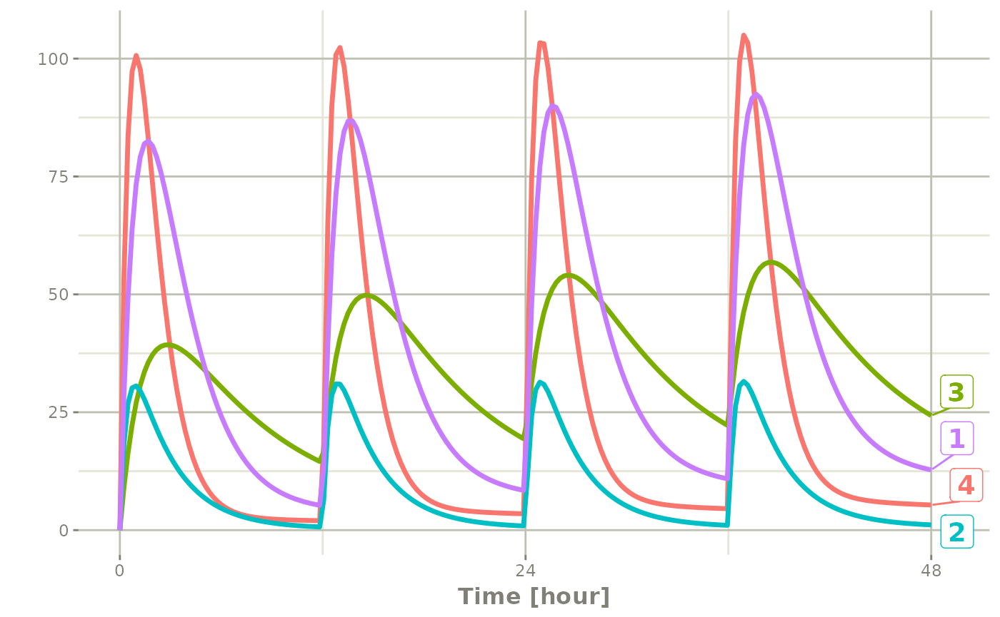
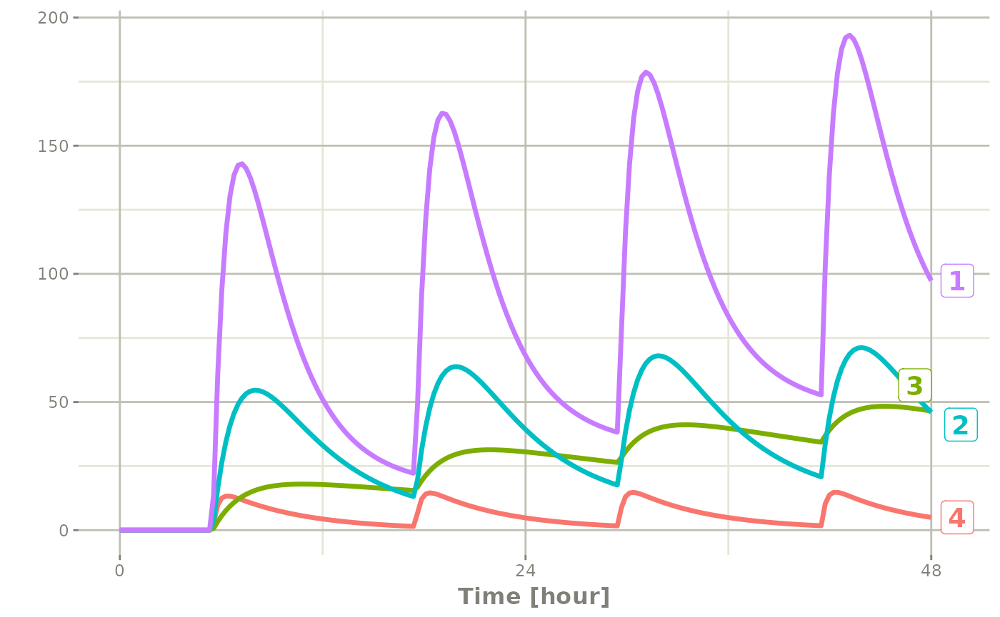
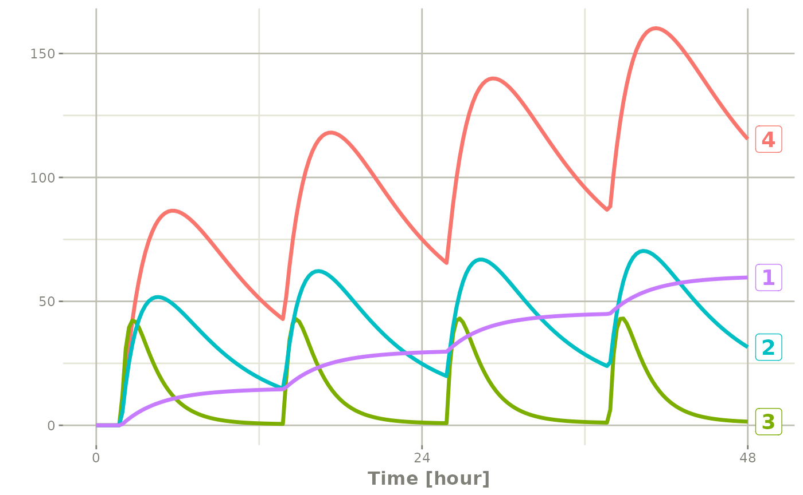
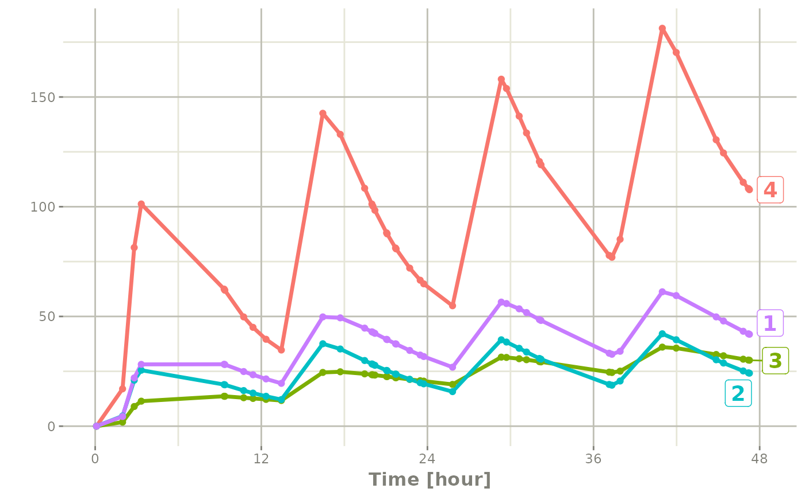
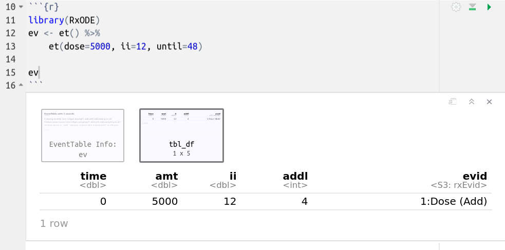
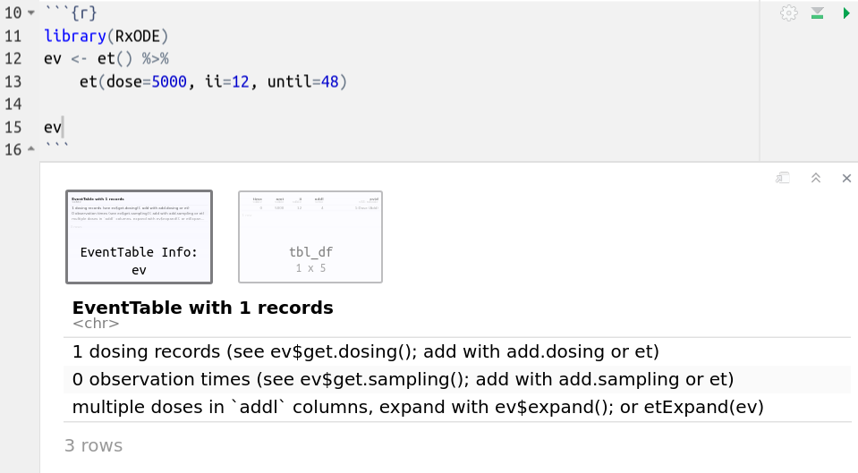

Building event tables with et()
2026-10-28
Source:vignettes/rxode2-event-table.Rmd
rxode2-event-table.RmdAn event table in rxode2 is a specialized data frame that acts as a container for all of rxode2’s events and observation times.
To create an rxode2 event table you may use the code
eventTable(), et(), or even create your own
data frame with the right event information contained in it. This is
closely related to the types of events
that rxode2 supports.
#> rxode2 5.1.8.9000 using 2 threads (see ?getRxThreads)
#> no cache: create with `rxCreateCache()`#> udunits database from /usr/share/xml/udunits/udunits2.xml
(ev <- et())#> -- EventTable with 0 records --
#> 0 dosing records (see x$get.dosing(); add with add.dosing or et)
#> 0 observation times (see x$get.sampling(); add with add.sampling or et)or
(ev <- et())#> -- EventTable with 0 records --
#> 0 dosing records (see x$get.dosing(); add with add.dosing or et)
#> 0 observation times (see x$get.sampling(); add with add.sampling or et)With this event table you can add sampling/observations or doses by piping or direct access.
This is a short table of the two main functions to create dosing
| add.dosing() | et() | Description |
|---|---|---|
| dose | amt | Dose/Rate/Duration amount |
| nbr.doses | addl | Additional doses or number of doses |
| dosing.interval | ii | Dosing Interval |
| dosing.to | cmt | Dosing Compartment |
| rate | rate | Infusion rate |
| start.time | time | Dosing start time |
| dur | Infusion Duration |
Sampling times can be added with add.sampling( sampling
times ) or et( sampling times ).
Dosing
intervals and sampling windows are also supported.
With most of the documentation we will be using the et()
syntax, though both are supported.
For these models, we can illustrate by using the model shared in the rxode2 tutorial:
## Model from rxode2 tutorial
m1 <-function() {
ini({
KA <- 2.94E-01
CL <- 1.86E+01
V2 <- 4.02E+01
Q <- 1.05E+01
V3 <- 2.97E+02
Kin <- 1
Kout <- 1
EC50 <- 200
## Added modeled bioavaiblity, duration and rate
fdepot <- 1
durDepot <- 8
rateDepot <- 1250
})
model({
C2 <- centr/V2
C3 <- peri/V3
d/dt(depot) <- -KA*depot
f(depot) <- fdepot
dur(depot) <- durDepot
rate(depot) <- rateDepot
d/dt(centr) <- KA*depot - CL*C2 - Q*C2 + Q*C3
d/dt(peri) <- Q*C2 - Q*C3
d/dt(eff) <- Kin - Kout*(1-C2/(EC50+C2))*eff;
eff(0) <- 1
})
}Adding doses to the event table
Once created you can add dosing to the event table by the
add.dosing(), and et() functions.
Using the add.dosing() function you have:
| argument | meaning |
|---|---|
| dose | dose amount |
| nbr.doses | Number of doses; Should be at least 1. |
| dosing.interval | Dosing interval; By default this is 24. |
| dosing.to | Compartment where dose is administered. |
| rate | Infusion rate |
| start.time | The start time of the dose |
ev <- eventTable(amount.units="mg", time.units="hr")
## The methods are attached to the event table, so you can use
## them directly
ev$add.dosing(dose=10000, nbr.doses = 3)# loading doses
## Starts at time 0; Default dosing interval is 24
## You can also pipe the event tables to these methods.
ev <- ev |>
add.dosing(dose=5000, nbr.doses=14,
dosing.interval=12)# maintenance
ev#> -- EventTable with 2 records --
#> 2 dosing records (see x$get.dosing(); add with add.dosing or et)
#> 0 observation times (see x$get.sampling(); add with add.sampling or et)
#> multiple doses in `addl` columns, expand with x$expand(); or etExpand(x)
#> -- First part of x: --
#> # A tibble: 2 x 5
#> time amt ii addl evid
#> [h] <dbl> [h] <int> <evid>
#> 1 0 10000 24 2 1:Dose (Add)
#> 2 0 5000 12 13 1:Dose (Add)Notice that the units were specified in the table. When specified,
the units use the units package to keep track of the units
and convert them if needed. Additionally, ggforce uses them
to label the ggplot axes. The set_units and
drop_units are useful to set and drop the rxode2 event
table units.
In this example, you can see the time axes is labeled:
#> i parameter labels from comments are typically ignored in non-interactive mode#> i Need to run with the source intact to parse comments
If you are more familiar with the NONMEM/rxode2 event records, you
can also specify dosing using et with the dose elements
directly:
#> -- EventTable with 1 records --
#> 1 dosing records (see x$get.dosing(); add with add.dosing or et)
#> 0 observation times (see x$get.sampling(); add with add.sampling or et)
#> multiple doses in `addl` columns, expand with x$expand(); or etExpand(x)
#> -- First part of x: --
#> # A tibble: 1 x 5
#> time amt ii addl evid
#> [h] <dbl> [h] <int> <evid>
#> 1 0 10000 12 6 1:Dose (Add)Which gives:

This shows how easy creating event tables can be.
Adding sampling to an event table
If you notice in the above examples, rxode2 generated some default
sampling times since there was not any sampling times. If you wish more
control over the sampling time, you should add the samples to the rxode2
event table by add.sampling or et
ev <- eventTable(amount.units="mg", time.units="hr")
## The methods are attached to the event table, so you can use them
## directly
ev$add.dosing(dose=10000, nbr.doses = 3)# loading doses
ev$add.sampling(seq(0,24,by=4))
ev#> -- EventTable with 8 records --
#> 1 dosing records (see x$get.dosing(); add with add.dosing or et)
#> 7 observation times (see x$get.sampling(); add with add.sampling or et)
#> multiple doses in `addl` columns, expand with x$expand(); or etExpand(x)
#> -- First part of x: --
#> # A tibble: 8 x 5
#> time amt ii addl evid
#> [h] <dbl> [h] <int> <evid>
#> 1 0 10000 24 2 1:Dose (Add)
#> 2 0 NA NA NA 0:Observation
#> 3 4 NA NA NA 0:Observation
#> 4 8 NA NA NA 0:Observation
#> 5 12 NA NA NA 0:Observation
#> 6 16 NA NA NA 0:Observation
#> 7 20 NA NA NA 0:Observation
#> 8 24 NA NA NA 0:ObservationWhich gives:

Or if you use et you can simply add them in a similar
way to add.sampling:
ev <- et(timeUnits="hr") |>
et(amt=10000, until = set_units(3, days),
ii=12) |> # loading doses
et(seq(0,24,by=4))
ev#> -- EventTable with 8 records --
#> 1 dosing records (see x$get.dosing(); add with add.dosing or et)
#> 7 observation times (see x$get.sampling(); add with add.sampling or et)
#> multiple doses in `addl` columns, expand with x$expand(); or etExpand(x)
#> -- First part of x: --
#> # A tibble: 8 x 5
#> time amt ii addl evid
#> [h] <dbl> [h] <int> <evid>
#> 1 0 10000 12 6 1:Dose (Add)
#> 2 0 NA NA NA 0:Observation
#> 3 4 NA NA NA 0:Observation
#> 4 8 NA NA NA 0:Observation
#> 5 12 NA NA NA 0:Observation
#> 6 16 NA NA NA 0:Observation
#> 7 20 NA NA NA 0:Observation
#> 8 24 NA NA NA 0:Observationwhich gives the following rxode2 solve:

Note the jagged nature of these plots since there was only a few sample times.
Expand the event table to a multi-subject event table.
The only thing that is needed to expand an event table is a list of IDs that you want to expand;
ev <- et(timeUnits="hr") |>
et(amt=10000, until = set_units(3, days),
ii=12) |> # loading doses
et(seq(0,48,length.out=200)) |>
et(id=1:4)
ev#> -- EventTable with 804 records --
#> 4 dosing records (see x$get.dosing(); add with add.dosing or et)
#> 800 observation times (see x$get.sampling(); add with add.sampling or et)
#> multiple doses in `addl` columns, expand with x$expand(); or etExpand(x)
#> -- First part of x: --
#> -- compressed preview for 4 individuals (ids 1:4) --
#> # A tibble: 201 x 6
#> id time amt evid ii addl
#> <chr> [h] <dbl> <evid> [h] <int>
#> 1 1:4 0 10000 1:Dose (Add) 12 6
#> 2 1:4 0 NA 0:Observation NA NA
#> 3 1:4 0.241 NA 0:Observation NA NA
#> 4 1:4 0.482 NA 0:Observation NA NA
#> 5 1:4 0.724 NA 0:Observation NA NA
#> 6 1:4 0.965 NA 0:Observation NA NA
#> 7 1:4 1.21 NA 0:Observation NA NA
#> 8 1:4 1.45 NA 0:Observation NA NA
#> 9 1:4 1.69 NA 0:Observation NA NA
#> 10 1:4 1.93 NA 0:Observation NA NA
#> # i 191 more rowsYou can see in the following simulation there are 4 individuals that are solved for:
set.seed(42)
rxSetSeed(42)
solve(m1, ev,
params=data.frame(KA=0.294*exp(rnorm(4)),
CL=18.6*exp(rnorm(4)))) |>
plot(C2)
Add doses and samples within a sampling window
In addition to adding fixed doses and fixed sampling times, you can have windows where you sample and draw doses from. For dosing windows you specify the time as an ordered numerical vector with the lowest dosing time and the highest dosing time inside a list.
In this example, you start with a dosing time with a 6 hour dosing window:
set.seed(42)
rxSetSeed(42)
ev <- et(timeUnits="hr") |>
et(time=list(c(0,6)), amt=10000, until = set_units(2, days),
ii=12) |> # loading doses
et(id=1:4)
ev#> -- EventTable with 4 records --
#> 4 dosing records (see x$get.dosing(); add with add.dosing or et)
#> 0 observation times (see x$get.sampling(); add with add.sampling or et)
#> multiple doses in `addl` columns, expand with x$expand(); or etExpand(x)
#> -- First part of x: --
#> -- compressed preview for 4 individuals (ids 1:4) --
#> # A tibble: 1 x 8
#> id time amt evid ii addl low high
#> <chr> [h] <dbl> <evid> [h] <int> [h] [h]
#> 1 1:4 5.49 10000 1:Dose (Add) 12 3 0 6You can clearly see different dosing times in the following simulation:
ev <- ev |> et(seq(0,48,length.out=200))
solve(m1, ev,
params=data.frame(KA=0.294*exp(rnorm(4)),
CL=18.6*exp(rnorm(4)))) |>
plot(C2)
Of course in reality the dosing interval may only be 2 hours:
set.seed(42)
rxSetSeed(42)
ev <- et(timeUnits="hr") |>
et(time=list(c(0,2)), amt=10000, until = set_units(2, days),
ii=12) |> # loading doses
et(id=1:4) |>
et(seq(0,48,length.out=200))
solve(m1, ev,
params=data.frame(KA=0.294*exp(rnorm(4)),
CL=18.6*exp(rnorm(4)))) |>
plot(C2)
The same sort of thing can be specified with sampling times. To specify the sampling times in terms of a sampling window, you can create a list of the sampling times. Each sampling time will be a two element ordered numeric vector.
rxSetSeed(42)
set.seed(42)
ev <- et(timeUnits="hr") |>
et(time=list(c(0,2)), amt=10000, until = set_units(2, days),
ii=12) |> # loading doses
et(id=1:4)
## Create 20 samples in the first 24 hours and 20 samples in the
## second 24 hours
samples <- c(lapply(1:20, function(...){c(0,24)}),
lapply(1:20, function(...){c(20,48)}))
## Add the random collection to the event table
ev <- ev |> et(samples)
library(ggplot2)
solve(m1, ev, params=data.frame(KA=0.294*exp(rnorm(4)),
CL=18.6*exp(rnorm(4)))) |>
plot(C2) + geom_point()
This shows the flexibility in dosing and sampling that the rxode2 event tables allow.
To put several regimens together (one after another, repeated cycles, or cohorts side by side) see Combining event tables.
Event tables in Rstudio Notebooks
In addition to the output in the console which has been shown in the above examples, Rstudio notebook output is different and can be seen in the following screenshots;
The first screenshot shows how the event table looks after evaluating it in the Rstduio notebook

This is a simple dataframe that allows you to page through the contents. If you click on the first box in the Rstudio notebook output, it will have the notes about the event table:

## Expanding eventsEvent tables can be expanded so they contain an addl
data item, like the following example:
#> -- EventTable with 1 records --
#> 1 dosing records (see x$get.dosing(); add with add.dosing or et)
#> 0 observation times (see x$get.sampling(); add with add.sampling or et)
#> multiple doses in `addl` columns, expand with x$expand(); or etExpand(x)
#> -- First part of x: --
#> # A tibble: 1 x 5
#> time amt ii addl evid
#> <dbl> <dbl> <dbl> <int> <evid>
#> 1 0 50 8 6 1:Dose (Add)You can expand the events so they do not have the addl
items by $expand() or etExpand(ev):
The first, etExpand(ev) expands the event table without
modifying the original data frame:
etExpand(ev)#> -- EventTable with 7 records --
#> 7 dosing records (see x$get.dosing(); add with add.dosing or et)
#> 0 observation times (see x$get.sampling(); add with add.sampling or et)
#> -- First part of x: --
#> # A tibble: 7 x 4
#> time amt ii evid
#> <dbl> <dbl> <dbl> <evid>
#> 1 0 50 0 1:Dose (Add)
#> 2 8 50 0 1:Dose (Add)
#> 3 16 50 0 1:Dose (Add)
#> 4 24 50 0 1:Dose (Add)
#> 5 32 50 0 1:Dose (Add)
#> 6 40 50 0 1:Dose (Add)
#> 7 48 50 0 1:Dose (Add)You can see the addl events were expanded, however the
original data frame remained intact:
print(ev)#> -- EventTable with 1 records --
#> 1 dosing records (see $get.dosing(); add with add.dosing or et)
#> 0 observation times (see $get.sampling(); add with add.sampling or et)
#> multiple doses in `addl` columns, expand with $expand(); or etExpand()
#> -- First part of : --
#> # A tibble: 1 x 5
#> time amt ii addl evid
#> <dbl> <dbl> <dbl> <int> <evid>
#> 1 0 50 8 6 1:Dose (Add)If you use ev$expand() it will modify the
ev object. This is similar to an object-oriented
method:
ev$expand()
ev#> -- EventTable with 7 records --
#> 7 dosing records (see x$get.dosing(); add with add.dosing or et)
#> 0 observation times (see x$get.sampling(); add with add.sampling or et)
#> -- First part of x: --
#> # A tibble: 7 x 4
#> time amt ii evid
#> <dbl> <dbl> <dbl> <evid>
#> 1 0 50 0 1:Dose (Add)
#> 2 8 50 0 1:Dose (Add)
#> 3 16 50 0 1:Dose (Add)
#> 4 24 50 0 1:Dose (Add)
#> 5 32 50 0 1:Dose (Add)
#> 6 40 50 0 1:Dose (Add)
#> 7 48 50 0 1:Dose (Add)